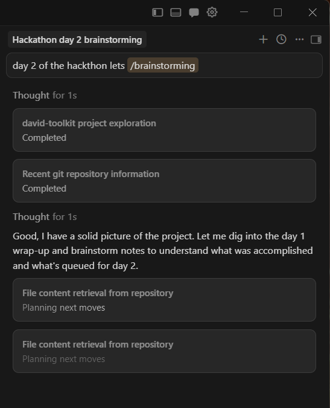

Tuesday, March 10

The Day 1 phase gate said: no dashboard wiring until we have one real export. Today we blew past that gate with 24 exports and a running pipeline.
I started the morning at the POS terminal in the shop. Exporting everything: three years of monthly product stats, four years of annual sales, transaction detail, category breakdowns, margin analysis, hourly traffic patterns, the full product catalog.
24 CSV files. CP1252 encoding, semicolons, European decimal commas. The usual Belgian POS mess.
The data isn't for one dashboard. It's for everything that comes after — the weekly briefing, the ordering assistant, the seasonal prediction. So we built layers: raw truth, cleaned truth, computed truth. Bronze → Silver → Gold.
21 tasks in 25 minutes. 15 commits between 13:43 and 14:07. The pipeline went from sketch to running in one afternoon — six Silver importers, seven Gold builders, a full orchestrator that auto-classifies every CSV by header fingerprint.
It felt effortless. Like the hard part was over. It wasn't.
The most important thing we found wasn't in the plan.
The STOCK field in the POS exports is not current inventory. It's cumulative sold units since the counter was last reset. A product showing STOCK: -41 means 41 units have been sold — not that there are -41 items on the shelf. The POS was never configured for real stock management.
Every stock-based signal in the scoring engine — stock cover days, stockout suspicion, demand pressure — was built on fiction. The entire ordering confidence framework that drives the performance zones is based on a field that doesn't mean what we thought it meant.
This is exactly the kind of thing the Day 1 phase gate was designed to catch. We caught it.
With stock data gone, the dashboard can't be an ordering tool yet. Not until real inventory tracking exists.
So the alpha becomes what it honestly can be: a big picture intelligence tool.
Scoring shifts from stock-based to growth-based. Clean, honest, defensible.
The alpha ships. Real data. Live weather. 28 commits. A V2 design doc that asks: "Is this actually useful?" The honest answer — not yet. But the foundation is real, and that matters.
The pipeline is beautiful. What's hiding inside it, we'll find out on Day 3.
Full technical log: DEV_LOG_DAY2.md